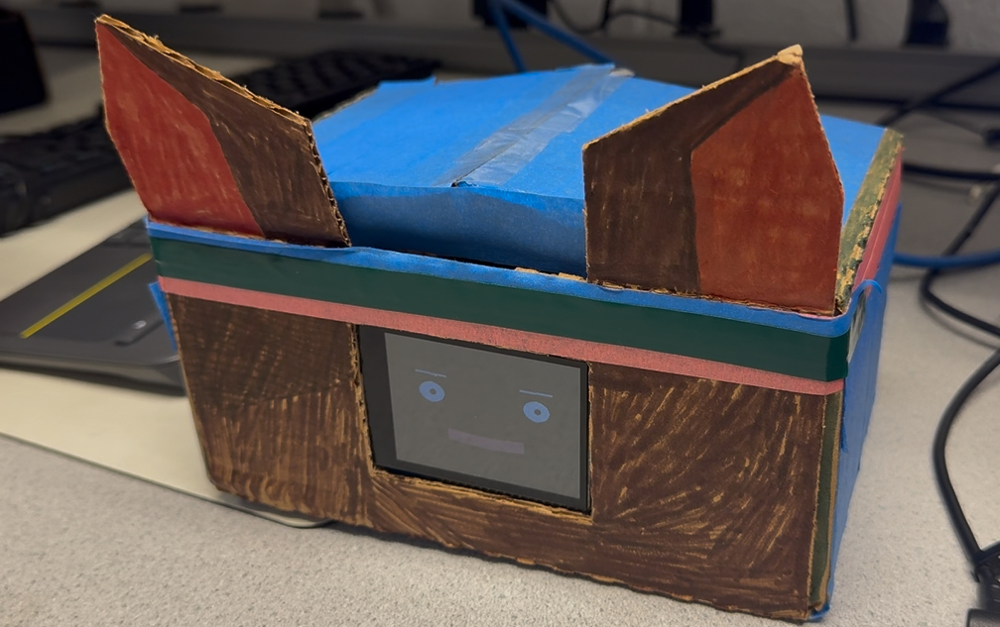
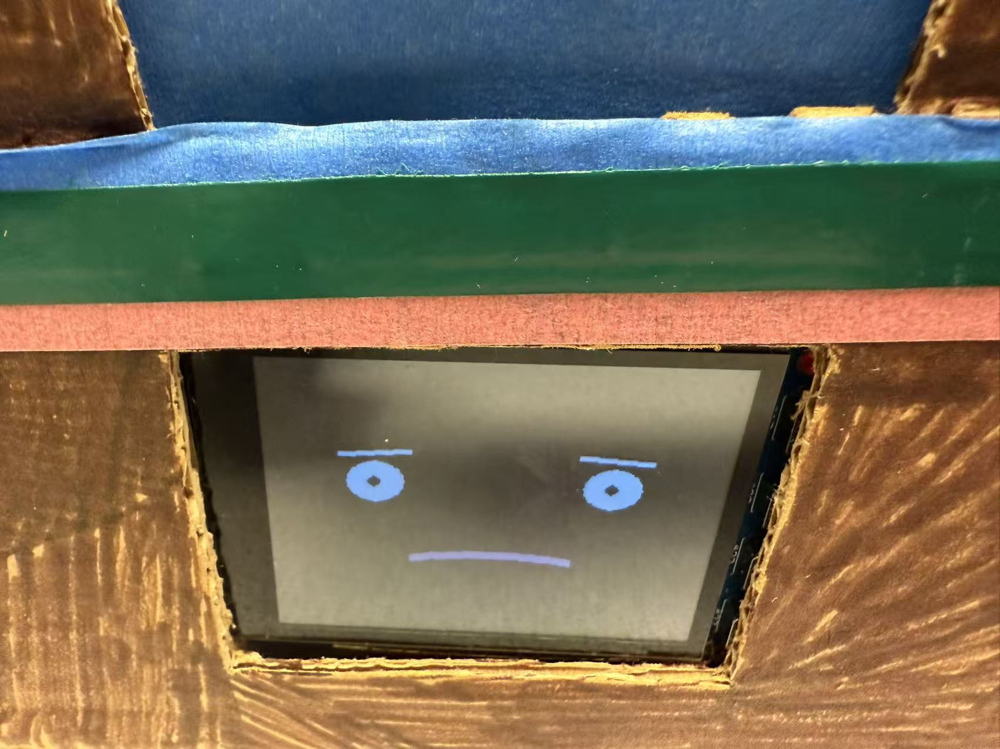

Team 7 ECE5725 Project
Companion Robot
A Project By Zhijie(Jack) Zhou and Jinfeng(Jeffery) He
Demonstration Video
Introduction
The goal is to build a small "pet companion robot" to provide emotional support and friendly interaction for users who may be under stress, lonely, or studying for a long time. It chats like a close buddy,responding your voice and touch in real time. It also shows personality with dynamically generated pygame expressions. The robot keeps a friendly smile in IDLE mode and switches to animated mouth-and-eyes “speaking” expressions during conversation. "Buddy" runs fully on a Raspberry Pi 4 with local LLM, STT, TTS, emotion state machine, memory, and display pipelines.

Project Objective:
- Robot using Raspberry PI, microphones, speakers, and touch screen to perceive the environment and perform expressive behaviors.
- Responding to voice commands: Using microphone to detect simple voice commands from user
- Responding to touch: Using touch screen to detect user interaction and responding with different expressions
- Showing off personality: Display different emotions when user talk with the robot.
- Run fully local: STT → LLM → TTS on-device, keeping latency low and privacy preserved.
Design
In system architecture, Raspberry Pi 4 runs fully local pipeline: udio I/O → STT (faster‑whisper) → LLM (Ollama qwen2.5 0.5b) → TTS (Piper) → emotion engine → pygame display. There are some multimodal interactions like microphone for voice commands, PiTFT touch screen for one tap, two taps, scrolls, and swipe. The robot also has up to 12 different pygame-generated expressions to show different emotions like happy, sad, excited, angry, and sleepy. For example, idle mode keeps smilling and speaking animateds mouth and eyes. More details, in expression rendering, the procedural face shows up through pygame and fallback to sprite frames. We also have per-frame blending and transition controller to avoid pop-in. For reliability and performance, we use WebRTC VAD + adaptive VAD to trim silence and stream STT/LLM/TTS with callbacks. The robot also has GPIO exit and watchdog in display loop. For Memory and History, we use an SQLite-backed conversation log and user memory to maintain context continuity.
Drawings
The basic idea of the appearance to the robot was to create a cat-like figure that is friendly and inviting. To better match the robot's voice personality, we made slight adjustments to the appearance and we also had a background story of "buddy": On a dark and windy night, I was so lonely that I kept staring out of the window in a daze. At the same time, I saw a dark shadow flash by under the moon and come to my window. I live on the 33rd floor. What kind of creature could climb to such a high floor? I had a feeling the person coming meant trouble. Then I saw a pair of brown cat ears appear before my eyes, and it was wrapped in three layers of ninja headscarves on its head! It calls itself "buddy" and came here from the west Coast in order to find its owner. So, "buddy" has been living with me until now and we have become very good friends.
Testing
In the video, we tested the robot with several scenarios including voice command recognition, touch interaction, and emotional response. For example, if we use our finger to tap the screen once, the robot will say "Hi there!" If we tap the screen twice, the robot will respond "I love this!" If we press the screen with a long time, the robot will say "That feels nice." If we drap the screen, the robot will say "Hehe, that tickles!" If we scroll on the screen, the robot will say "Round and Round!" In the speak mode, the robot will first show a smile face and when we speak, a blue box will appear at the edge of the robot. This means the robot is listening. After we finish speaking, the robot will process our voice command and respond accordingly For instance, when we say "I feel sad today", the robot will show a sad face and say "oh no, can't image what makes you feel".
Result
Overall, the project was a success. The companion robot was able to respond to voice commands and touch interactions in real time, providing a friendly and engaging experience for users. In the future, we plan to install a camera to apply computer vision to track people movements like creating eye contract. We also want to toggle an advanced mode by using cloud api for better performance and memory storage.
Work Distribution
Project group picture
Jinfeng(Jeffery) He
jh2933@cornell.edu
Designed the overall software architecture (Just being himself).
Zhijie(Jack) Zhou
zz953@cornell.edu
Tested the overall system.
Make the cardboard appearance
Code the early pygame prototype
Parts List
- USB Microphone $2
- Mini Breadboard $2
- NeoPixel Ring - $9.95
- LEDs, Resistors, Wires, Raspberry Pi, Tape, and Cardboard - Provided in lab
Total: $?
Code Appendix
// Hello World.c
int main(){
printf("Hello World.\n");
}